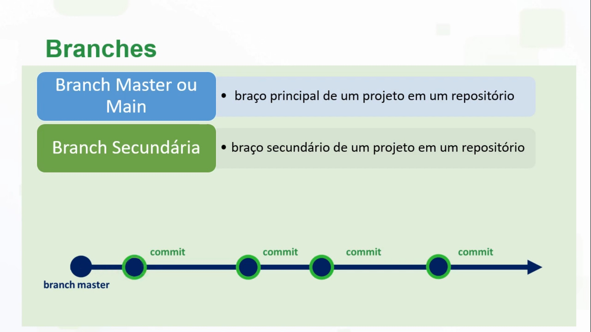
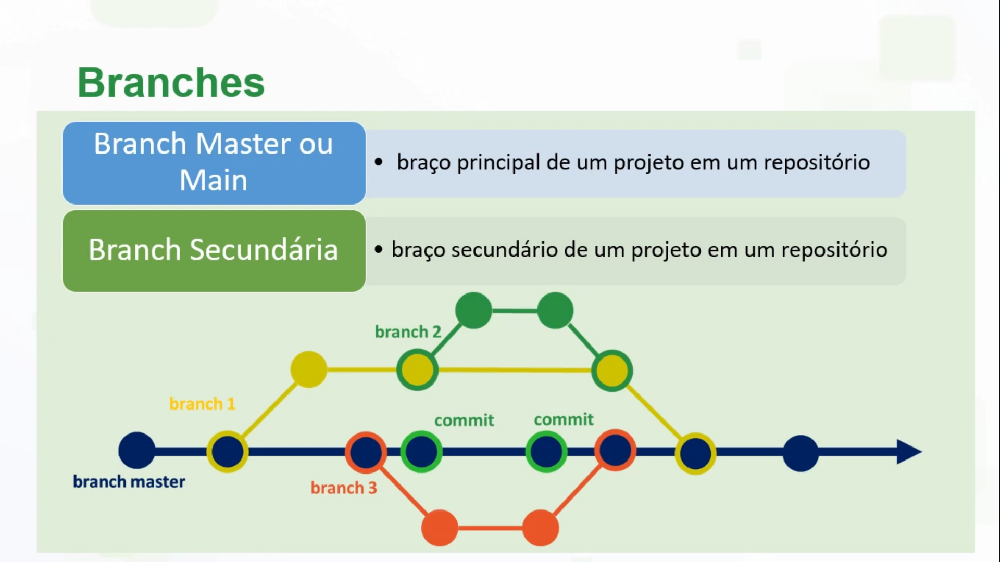

São ramificações de um projeto de software documento e tem como objetivo o desenvolvimento paralelo de:
- Novas de funcionalidades;
- Correção de problemas;
- Alteração de código.
- Braço principal de um projeto em um repositório
Caso você tenha um projeto em desenvolvimento onde muitas pessoas tem acesso, e podem alteram ele ao mesmo tempo, usando uma branch master, o código pode ficar confuso ou dar algum um erro. Por exemplo:
Imagine que eu tenho um site de Cupom de Desconto e várias pessoas da minha equipe tem acesso e estão fazendo configurações no site ao mesmo tempo que os usuários visitam e buscam cupons. Se eles alteram o código e dão um commit, o site fica instável.
Criando uma ou várias brunchs secundárias, a equipe pode alteram o código sem que deixem o projeto confuso, ou que de algum erro. Vamos utilizar o mesmo exemplo de antes:
Minha equipe está atualizando o código do site de Cupom de Desconto todos ao mesmo tempo, mas cada atualização é feita em uma branch secundária, o site não ficará instável. Então quando eu souber que está tudo certo nas atualizações, posso fazer um merge(mesclagem) com a branch main.
Esta etapa é muito importante para a consolidação e finalização do seu projeto de Desenvolvimento, pois será quando o seu site estará hospedado em um servidor e qualquer usuário com acesso a internet pode entrar em seu site. Porém muitas vezes você terá que pagar para usar ele como serviço de hospedagem.
Mas o GitHub Pages oferece uma opção boa que é a hospedagem gratuita de sites. Basta o seu repositório estar como público e a URL será: https://nomeusuario.github.io/repositorio
Para entender como criar uma branch secundaria e como fazer um merge assista a este vídeo